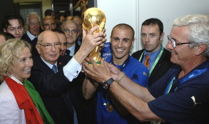

ПРИВЕТ УЧАСТНИКАМ СОРЕВНОВАНИЙ!
ФУТБОЛ

Футбол — командный вид спорта, в котором целью является забить мяч в ворота соперника ногами или другими частями тела (кроме рук)
большее количество раз, чем команда соперника.
Есть 17 официальных правил игры, каждое из которых содержит список оговорок и руководящих принципов.Эти правила
предназначены для применения на всех уровнях футбола, хотя есть некоторые изменения для таких групп, как юниоры,
взрослые, женщины и люди с ограниченными физическими возможностями. Законы очень часто формулировались в общих
чертах, которые позволяют упростить их применения в зависимости от характера игры.